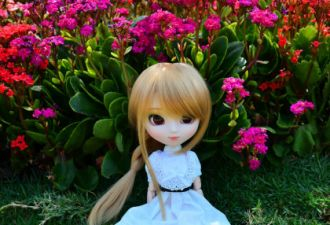

Ніч яка, господи! Місячна, зоряна:Ясно, хоч голки збирай...Вийди, коханая, працею зморена,Хоч на хвилиночку в гай!
Where are you now?I still remember usWhere are the timesWhere we were oneWhen we were whole Do you recall?
Ти переміг,Здавалось усіх,Але ця гра не така.
Ти у човні,Добре чи ні,Та я мінлива ріка.
Знову
Я разгадал твой сказочный пароль,Он был мечтою маленькой Ассоль.Хочу под алым парусом дойтиИ до твоей мечты, если любишь ты.

OuhC’est l’amour, c’est l’amour encoreNotre faible qui nous rend fortNotre coeur bat tout les records
[як почуто]
Mi alma te ama,Tu eres la luz de mi primavera.De mi primavera ay ay ay,Tu no ves, tu no ves,Ay mamio mami tu ves, mi cielo mi luna,
Кхоллам хилла хазчу сарахь, вайна довзар.ХIетахь дуьйна сан жима дог дели ловза.Елаелла. Сайн безамина дуьхьал яьлла.
Doar petale uscatecazute pe o carteImi spun ca tuEsti departeSi nu stii cum arde si nu stii cum doareTu nu estiUnde esti tu oare?
Очень долго я тебя ждала,И всё как в сказке со мной случилось.Закружилась моя голова,И я влюбилась.Позабыла обо всех делах
Дашо нур даржа деш,Дуньен чу можа малх кхета.Седарчий цу стиглахь,Безамна шаьш къежаш хета.
Тишина, где каждый звукСлышишь. Слышишь...Это танец моих рук,Он придуман для тебя.Это песня моих снов,Видишь, видишь?
Если сердце не сумеет больше ждать,Позови меня, и я к тебе приду.Я сумею и поверить, и понять,И любить, и другом быть тебе смогу.
поискатэндэ
Chorus (repeating):
All I needIs to be lovedBy you...
хайлт
Ямар гоё байна гадааЯг одоо уулзье гэх үүХаагуур ч хамаагүй явьяХаана ч суусан яахав хоёул
Hoy en mi ventana brilla el solY un corazón se pone tristeContemplando la ciudadPorque te vas
Прикоснись своей рукойИ дыхание со мной навсегда...Да.Я люблю смотреть в глаза,Я скажу, и ты сказал мне тогда...Мне тогда...
По узкой горной дороге, что вьется, как серпантин.Под месяцем одиноким я еду, как он, один.Как он, молодой да ранний, влюбленный в одну звезду,